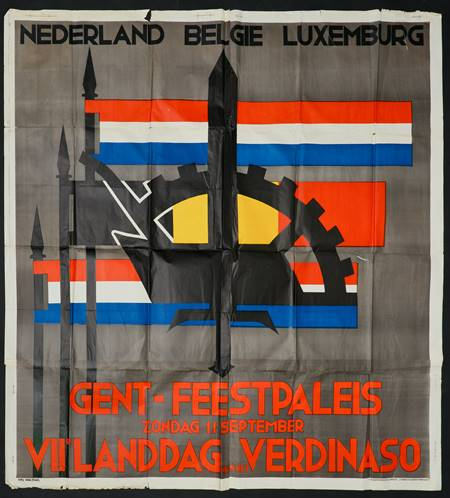
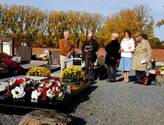

> nieuwsbrief > 23e jg. - nr.
1/2019
Inhoud

Affiche Verdinaso-landdag te Gent
De
jaarwisseling nadert met rasse schreden – en meteen ook het
tijdstip voor het hernieuwen van de bijdragen voor 2019. Dank
zij een zuinig beheer blijft het ons mogelijk om,
niettegenstaande alweer gestegen druk- en portkosten, de
minimumbijdrage te behouden op 29 €. In ruil daarvoor verzekeren
we u de stipte toezending van het nieuwe Jaarboek Joris van Severen
– het 23e al – in de meimaand en van de vier nummers van ons
kwartaalblad Nieuwsbrief
Joris van Severen. Vanaf het bedrag van 35 € boeken we u
met dank als steunend lid. Vereffening graag via onze rekening
IBAN: BE71 0001 7058 1469 – BIC: BPOTBEB1 t.n.v. Studie-centrum
Joris van Severen, Paddevijverstraat 2, 8900 Ieper.
Verwijzing
In de
verderop in deze Nieuwsbrief
opgenomen bijdrage van G. Durnez verwijst de auteur naar de
linkse milities die in de jaren van het interbellum Joris van
Severen inspireerden tot het opzetten van een eigen
ver-weerkorps. In zijn recente studie Liever Revolutie dan
Oorlog (Uitg. Vrij-dag, 2018, 335
pp.) bestudeerde onze medewerker Ruud Bruijns het ontstaan van
de Internationale Socialistische Anti-Oorlogsliga. Aanbevolen
Joris van Severen op zoek naar Vlaamse elite
Verdinaso-leider
droomde van corporatistisch Groot-Nederland
Gaston Durnez
Een der bekendste Belgische
slachtoffers van het Mei-drama in 1940 is Joris van Severen. Als
een van de vele verdachten-op-voorhand werd de stichter en
leider van het Verdinaso, het Verbond van Dietse
Nationaal-solidaristen, naar Frankrijk gevoerd, waar hij op 20
mei door Franse militairen om het leven is gebracht. Zijn
lijdensweg en dood schokten zeer velen, binnen en buiten zijn
beweging.
Ongetwijfeld bracht de moord een
aantal van zijn woedende volgelingen dichter bij de samenwerking
met de Duitsers. Een van zijn goede medewerkers, Luc
Delafortrie, is ervan overtuigd, dat Van Severen zich niet ten
dienste van de bezetter zou hebben gesteld. Maar zijn gruwelijke
dood ontredderde zijn mensen, van wie een aantal zich na verloop
van tijd bij de collaborerende “Eenheidsbeweging" van het Vlaams
Nationaal Verbond aansloot, terwijl anderen zich daar tegen
verzetten en een groep zelfs in de clandestiene anti-Duitse
actie terechtkwam.
Joris van Severen, die was
geëvolueerd van een vurige Vlaams-nationalist tot een
voorvechter van een Belgisch-Nederlandse unie, in het kader van
een corporatistisch geïnspireerde staat, is de geschiedenis
ingegaan als een moedig man en een fascinerende persoonlijkheid
die vooral een “mensenvormer" is geweest.
De Westvlaamse notaríszoon droomde
er allereerst van zijn volk op te tillen uit de slafelijke
lijdzaamheid waarmee het zijn lot onderging. Dit zou gebeuren
onder leiding van een nieuwe elite, een uit het volk gevormde
Vlaamse “aristocratie", die te gelegener tijd de staat in handen
zou kunnen nemen.
Een en ander gaf hem bij zijn
tegenstanders spoedig de naam een fascist te zijn. Alhoewel hij
inderdaad elementen aan de fascistische beweging en retoriek
ontleende, gaande van het vlagvertoon tot de militie en het
leidersprinciep (“De prins in zijn raden, het volk in zijn
staten", zo luidde een der leuzen van zijn keurkorps), moet men
volgens kenners toch flink nuanceren. In geen geval was er in
mei 1940 een aanleiding om Van Severen, die zijn trouw aan de
koning en zijn leger had betuigd, als een handlanger van de
aanvallende nazi's te beschouwen.
“Levenswekker"
Joris, of Georges zoals hij in
zijn jeugd en later door zijn intieme vrienden werd genoemd,
behoorde tot de (Franstalige) Westvlaamse burgerij waar
monseigneurs en officieren uit voortkwamen. Op 19 juli 1894 werd
hij geboren als oudste zoon van een notaris die burgemeester was
van Wak-ken. De pastoor van dat dorp was Hugo Verriest, de
“levenswekker van Vlaanderen", die in 1895 uit Wakken werd
overgeplaatst naar het kleine Ingooigem, als straf omdat hij
notaris Van Severen politiek had gesteund. De vriendschap van de
legendarische “paster" had later een grote betekenis voor Joris.
Verriest maakte van de jongeling een flamingant die Albrecht
Rodenbach als zijn voorbeeld nam, maar die ook de Kritiek der Vlaamse
Beweging van August Vermeylen las.
Een andere relatie met invloed was
zijn tante, Maria Belpaire, de Ant-werpse schrijfster en
mecenas, promotor van Dietsche
Warande en Belfort, die in het begin van de vorige eeuw
een rol speelde in de sfeer van de katholieke flamingantische
intelligentsia. Niet voor niets noemde men haar “de Wijze Vrouw
van Vlaanderen". Zij zou Van Severen in contact brengen met de
Franse (katholieke) rechterzijde, waarin hij zijn “Maïtres à
penser", zijn geestelijke leermeesters, zou vinden.
Na humaniora bij de Gentse
jezuïeten begon Joris van Severen in 1912 rechten te studeren
aan de (nog Franstalige) RU-Gent. Toen in 1914 de oorlog
uitbrak, trok hij naar het leger. Aan het IJzerfront bracht hij
het van sergeant tot onderluitenant. Vlug raakte hij betrokken
bij de Vlaamse actie en werd hij een der leidende figuren in de
clandestiene Front-beweging. Zo groeide de jonge dandy tot een
revolutionair die begon na te denken over de wijze waarop “een
dood volk" als het Vlaamse weer “tot leven" kon komen.
Na de oorlog durfde hij het
onmiddellijk aan, met gewezen “activisten" als Achilles Mussche
en Wies Moens samen te werken. In januari 1921 gaf hij het
eerste nummer uit van een tijdschrift met een typische
wijdlopige titel: Ter
Waarheid met het Gedachteleven in Vlaanderen en in de Wereld.
Tevens trad hij actief op in diverse Vlaams-nationalistische
initiatieven en pogingen tot partijvorming. Daarbij steunde hij
zich op de ideeën van Verriest over een organische structuur van
de volksgemeenschap, zowel als op de katholieke sociale leer en
de “Action Française" van de Franse monarchist Charles Maurras.
De Vlaams-nationalisten van toen
vormden allesbehalve een eenheidsfront en Van Severen behoorde
tot de radicaalsten. “La Belgique, qu'elle crève!" riep hij in
1928 in het Parlement (*), waarin hij van 1921 tot 1929 zetelde.
Zijn ideaal groeide toen naar een Groot-Nederland, zonder
Wallonië.
Na heel wat ideologisch en ander
getwist, stond men in het begin van de jaren dertig voor een
scheiding der geesten en der wegen. Op 5 oktober 1931 stichtte
Van Severen zijn Verdinaso. Twee jaar later groepeerden diverse
andere richtingen zich in het Vlaams Nationaal Verbond, het VNV,
waarvan de Brabantse onderwijzer Staf de Clercq de leiding
kreeg. Het boterde niet tussen die twee figuren: “de stoere
officier" keek neer op “het boertje". Zo zou de sfeer tot het
einde blijven in beide bewegingen. gingen. De “aristocraten"
deden smalend over “de democraten", de wijndrinkers lachten de
bierflaminganten uit. En omgekeerd.
Het Verdinaso richtte, “naar het
voorbeeld van de socialisten", zegde men, een eigen
geüniformeerde militie op (maar haar militaire oefeningen werden
in 1933 verboden). Het bouwde een eigen vakbond op en stichtte
een jeugdgroep.
Hoeveel leden de beweging tel,
weet men niet precies. Op haar hoogte-punt zou zij er 12.000
hebben gehad. Anderen zeggen dat er nooit meer dan 2.000 zijn
geweest, plus een aantal geheime steunende leden. In Nederland
ontstond eveneens een Verdinaso, maar dat stelde niet zoveel
voor. Eigenlijk wilde Van Severen vooral een drukkingsroep die
de machtsposities zou kunnen binnendringen. Zijn zichtbare en
onzichtbare invloed was veel groter dan de getallen suggereren.
Dat het VNV op zijn beurt zo Nederlands ging doen, schrijft men
voor een flink deel aan hem toe. Leidende nationalisten als
Elias en Borginon hebben altijd betreurd dat het getheoretiseer
over “Dietsland" destijds zoveel ruzie uitlokte en krachten
verspilde op een ogenblik dat er nog voor elementaire Vlaamse
rechten moest worden gevochten.
“Nieuwe marschrichting"
De politieke ideeën van Joris van
Severen bleven niet stilstaan. “De parlementaire democratie
verwierp hij (zo betoogt Luc Delafortrie), niet in absolute zin,
maar omdat zij voor het Vlaamse vraagstuk geen oplos-sing kon
brengen.”
Dit veroorzaakte toen de
definitieve breuk met het Vlaams-nationalisme. Vrij vlug groeide
ook zijn idee over een politiek Groot-Nederland, waar-van hij
inzag dat het onmogelijk te realiseren was. Hij wilde daarom
vertrekken van een meer realistische basis."
Op 14 juli 1934 kondigde hij in
Kemzeke, in het landgoed van zijn toenmalige medestander Willem
Melis, een “nieuwe marschrichting" af. (Men “liep" niet in die
tijd, men “marscheerde". Zoals men geen “voorzitter" kende, maar
een “Leider"; geen “congres", maar een “Landdag"...)
België, zo heette het nu, moest
niet langer vernietigd maar veroverd wor-den en dus eerst als
eenheid erkend. In het begin, meent Delafortrie, ging het in dit
opzicht meer om een tactische houding, mede onder de indruk van
de anti-Verdinaso-maatregelen van de regering. Stilaan werd “het
feit België” aanvaard. Nederlandse integratie bleef het
streefdoel, maar het kon bereikt worden via de bestaande staten
en de nationale structuren.
De neutraliteitspolitiek van
Leopold III, een militair verdrag tussen Nederland, België en
Luxemburg, een economisch verbond en culturele toenadering
werden door Van Severen als belangrijke stappen naar zijn doel
gezien. Zo kan men hem nu een voorloper of pionier van Benelux
en van de Taalunie noemen.
De “belgicistische" ommekeer
jaagde een aantal aanhangers weg, o.m. Wies Moens. De grote
meerderheid bleef Van Severen trouw. Ondertussen oefenden de
buitenlandse rechtse regimes invloed uit op stijl en inhoud van
de beweging. Maar toen het nazi-geweld almaar toenam, was het
duidelijk, dat Van Severen niets op had met het Duits
imperialisme. In de mobilisatietijd van 1938-'39 maande hij zijn
volgelingen aan, trouw hun plicht tegenover het vaderland te
doen.
“Orde en persoonlijkheid”
Over leven en streven van Joris
van Severen is in de voorbije halve eeuw veel gepubliceerd, meer
dan over menig andere Vlaamse figuur uit zijn tijd. Arthur de
Bruyne is, in boek en blad, een der eerste en beste biografen
geweest, terwijl Luc Delafortrie zich vooral beijverde om de
stoere retoriek en het kartonnen Landdagendecor te verwijderen
die thans het zicht op Van Severens ideeën belemmeren.
Delafortrie wilde zijn vereerde
voorman zuiveren van fascistische smet-ten en zegt dat zijn
“oproep tot orde en persoonlijkheid" in wezen tegen het fascisme
of nationaalsocialisme inging. De auteur is er tevens van
overtuigd, dat Van Severen niet zou zijn toegetreden tot een
militaire collaboratie met de Duitsers: “Joris huldigde niet het
princiep, bloed-offers te brengen voor andere volkeren.” Dat
heeft hij bewezen tijdens de Spaanse burgeroorlog, toen geen
enkele Dinaso naar het front is gegaan. Zo zou hij evenmin
geduld hebben, dat leden van zijn organisatie “binnen het
ideeëngoed van een Groot-Germaans, een Groot-Duits Rijk of een
Nieuw Europa tegen het bolsjewisme zouden zijn opgetrokken."
Onlangs beklemtoonde Delafortrie
nog, dat Van Severen zowel het racisme als het staatsabsolutisme
verwierp. “Hij betoogde dat het nationaalsocialisme het ras, en
het fascisme de staat als doel stelde. Hij wees dat
uitdrukkelijk af: het doel was de ontwikkeling van de menselijke
persoonlijkheid." Toch bleek uit een recent onderzoek van de
Leuvense historicus Lieven Saerens dat het Verdinaso op een
bepaald moment in het Vlaanderen van de jaren dertig
“toonaangevend" is geweest in de antisemitische propaganda, al
wilde het Verbond geen geweld of deportatie. Een van zijn nog
levende leden, Jef François, die een sterke rol in de militaire
collaboratie heeft gespeeld, zei aan de historicus dat tachtig
procent van de Verdinaso-basis antisemitisch was.
Een belangrijke synthese werd
geleverd door wijlen Luc Schepens. In Ons Erfdeel (nr. 2, jg.
1.975) tekende hij de kleine man met de harde stem als een
complexe figuur, waarin tegenstellingen leefden tussen uiterlijk
optreden en innerlijk denken, met grootspraak, behoefte aan
stijl en schoonheid, artistieke drang, stoïcisme en luidruchtig
pret maken. Een volledige en afdoende verklaring voor het succes
van Joris van Severen leek Schepens onmogelijk. Hij meende wel
dat die bijval niet zozeer toe te schrijven was aan het
programma als aan de aantrekkingskracht van zijn
persoonlijkheid. Dat werd o.m. bewezen door de ineenstorting van
de beweging na zijn dood. (Zij is na de oorlog nooit echt
herleefd), Van Severen was geen politicus, wèl “een leider, een
mensenvormer, die in het spoor van Verriest aan de Vlamingen
geleerd heeft, hun eigen persoonlijkheid op een beschaafde en
stijlvolle wijze te manifesteren. En op dit vlak reikt zijn
schaduw veel verder dan zijn kleine gestalte laat vermoeden".
Inderdaad, het is opmerkelijk met
welke eerbied en waardering velen die hem gekend hebben nu nog
over hem spreken. Ook bij hen die hem hebben bestreden. Boeiend
en leerrijk zou het zijn, de verdere loopbaan, evolutie en
invloed na te gaan en te beschrijven van mensen die indertijd
rond hem hebben gestaan. Van Jef François, Paul Persyn en Pol
Leroy, tot Ast Fonteyne, Luc Delafortrie, Raf Renard, Jef van
Bilsen. En vele anderen, in diverse richtingen.
__________________
Bron: De Standaard, 19-20 mei
1990, p.10.
(*) De mythe omtrent die uitroep
in het parlement, werd ondertussen als dusdanig – een mythe –
door historici weerlegd.
Honderd jaar of een hele eeuw later
Deze voorbije en komende dagen
horen we weer heel veel woorden over de ‘Groote Oorlog’. Honderd
jaar geleden waren de meesten onder ons natuurlijk nog niet
geboren. Maar in die tijd, tijdens de Eerste Wereldoorlog, was
er al wel een jonge man die een dagboek bijhield. Dat dagboek
werd in 2005 uitgegeven bij Pelckmans te Kapellen onder de titel
Die vervloekte oorlog.
Wie hier in Vlaanderen dit boek niet heeft gelezen kan maar
beter zwijgen over die oorlog en haar gevolgen. Ziehier, wat
deze jonge man (het was Joris van Severen) toen op vrijdag 8
november 1918 noteerde of neerkrabbelde in een gelijnd schriftje
met 57 beschreven pagina’s:
’s Avonds vertelt men dat de wapenstilstand getekend
is. Zou het waar zijn? Ik geloof alleszins dat het maar een
kwestie van uren is. Dat gedacht is om me gek te maken. Die
oorlog, die afschuwelijke moorderij van vier lange eeuw-jaren
gedaan! Er waaien nooit geziene klaarten aan.
Sinds deze morgen vier uur heb ik ’t kanon niet meer
gehoord. Nu gaat de strijd, de felle, maar vreedzame, gezonde
geestesstrijd beginnen, groots en edel, voor Vlaanderen.
Al onze lezers en zeker die
Belgische barones Sophie de Schaepdrijver, die Amerika heeft
verlaten en weer onder ons is, zou dit onthutsende dagboek
dringend moeten lezen en herlezen. Vanaf dinsdag 4 oogst 1914
tot en met maandag 11 november 1918. En als deze dame een
bepaalde passage niet goed begrijpt of een bepaalde naam haar
onbekend is moet ze de deskundige inleiding van Daniël Vanacker
maar lezen of de vele voetnoten achteraan en het alfabetisch
repertorium even raadplegen. Of gewoon alles rustig lezen van
bladzijde 6 tot en met de bladzijde 536. Het zou – trouwens ook
voor deze historica – meer dan goed zijn om in dit dagboek te
bladeren en soms met een timmermanspotlood bepaalde passages te
onderstrepen of in de marge met uitroeptekens aan te duiden.
drik Carette
Mainvault, 3 novembre 2018, sur la tombe de Louis Gueuning
Jean-Pierre Destrebecq
Les
morts constituent des ponts entre les vivants. Nous en avons la
certitude et nous en sommes la preuve. Communion des vivants et
des morts, entraide mutuelle: les uns ne peuvent se passer des
autres.
Entend-on
les clercs parler aujourd’hui de la Communion des Saints Pas du
tout ou si peu. Et pourtant… Une voix nous atteint encore: celle
de Georges Bernanos dont on commémore cette année le 70e
anniversaire de la disparition.

Jean-Pierre
Destrebecq aan het woord bij het graf van Louis Gueuning
Mais
écoutons-le…
«Le
scandale de l'univers n'est pas la souffrance, c'est la
liberté. Dieu a fait libre sa création, voilà le scandale des
scandales, car tous les autres scandales procèdent de lui. La
damnation ne serait-elle pas de se découvrir trop tard,
beaucoup trop tard, après la mort, une âme absolument
inutilisée, encore soigneusement pliée en quatre, et gâtée
comme certaines soies précieuses, faute d'usage? Quiconque se
sert de son âme, si maladroitement qu'on le suppose, participe
aussitôt à la Vie universelle, s'accorde à son rythme immense,
entre de plain-pied, du même coup, dans cette communion des
saints qui est celle de tous les hommes de bonne volonté
auxquels fut promise la Paix, cette sainte Église invisible
dont nous savons qu'elle compte des païens, des hérétiques,
des schismatiques ou des incroyants, dont Dieu seul sait les
noms. […] L’Église est une maison de famille, une maison
paternelle, et il y a toujours du désordre dans ces
maisons-là, les chaises ont parfois un pied de moins, les
tables sont tachées d'encre, et les pots de confiture se
vident tout seuls dans les armoires, je connais ça, j'ai
l'expérience. La maison de Dieu est une maison d'hommes et non
de surhommes. Les chrétiens ne sont pas des surhommes. Les
saints pas davantage ou moins encore, puisqu'ils sont les plus
humains des humains. Les saints ne sont pas sublimes, ils
n'ont pas besoin du sublime, c'est le sublime qui aurait
plutôt besoin d'eux. Les saints ne sont pas des héros, à la
manière des héros de Plutarque. Un héros nous donne l'illusion
de dépasser l'humanité, le saint ne la dépasse pas, il
l'assume, il s'efforce de la réaliser le mieux possible...»
(Georges Bernanos, "Nos amis les saints", 1947)
Sans
nul doute, Monsieur Gueuning aurait apprécié ces lignes de
l’un des plus puissants romanciers du vingtième siècle.
Seigneur,
Roi de gloire, délivrez les âmes des fidèles défunts du
gouffre sans fond; que saint Michel, le porte-étendard, les
introduise dans la sainte lumière. Amen.
Grafrede voor Louis
Gueuning
Wanneer wij u, op ‘s Konings
naamfeest – 15 november 1971 – ten grave hebben gedragen en uw
leven en uw geopolitieke Leer en Actie samen gevat hebben in een
Latijnse eretitel2, herkomstig van de katholieke
bisschop van Hippone3 Sint-Augustinus4 -
“Defensor Civitatis et Ordinis” – “Verdediger van de Steden (dit
is de Gemeenschap) en van de Orde” - de Orde die leidt tot God5,
volgens het woord van paus Pius XII, hebben wij meteen Joris van
Severen6 “Pater Patriae” († 20 mei 1940) gehuldigd en
herdacht als “Vader des Vaderlands”, ons vaderland, dit is het
Delta-gebied van de drie grote stromen – Schelde, Maas en Rijn
-) – van de Somme (Picardië) tot het Rijnland (Aken, waar Karel
de Grote rust).
Ons vaderland, dit zijn de XVII
Provinciën van Keizer Karel (°te Gent in 1500), inbegrepen het
Bourgondisch Vlaanderen van Gent tot Rijsel (Lille) ingevolge
het feit dat de dochter van de Graaf van Vlaanderen een
Bourgondische prins huwde.
Namens Louis Gueuning past het
inderdaad hier ook de Bourgondische prins Karel de Stoute te
herdenken, gevallen in de Slag bij Nancy (1477) in Lotharingen,
en tevens Willem de Zwijger, stadhouder van Holland, vermoord te
Delft (1584): “Dit is te klein om verdeeld te blijven” en ”Het
is niet nodig te hopen om te ondernemen noch te slagen om te
volharden”.
Ons Karolingisch erfgebied is door
Louis Gueuning in herinnering gebracht:
1.
door de Leer dat zowel
de individuen als de Naties een eigen Roeping en Zending hebben,
overal ter wereld en dus ook in Europa;
2.
door niets toe te geven
– “nulli concedo” – op de glorierijke erfenis van zijn voorloper
Joris van Severen, vermoord te Abbeville6;
3.
door de stichting van
de eerste clandestiene verzetsbeweging (op 6 september 1940, de
Duitse bezetting tijdens WO.II) van de Orde Joris van Severen
(in 1970 opgevolgd door de Ordo Sancti Michaelis (OSM).
Hun opdracht, hen gegeven door
Louis Gueuning, was en blijft: Bourgondische “Low Countries” (of
Benelux) “Gloriosior Ex Surgo” – “U zult nog glorierijker
herrijzen” tot heil van Europa’s Roeping en Zending!
… Want het woord van Joris van
Severen: “Alors, nous tiendrons d’une main de fer cette clé de
l’Europe”7 blijft van kracht.
Joseph. E.
Peeters
Permanente
secretaris (1968-2018)
van de Stichting
Louis Gueuning
Noten
1 “Ik zal niets afstaan” (van de
erfenis van Joris van Severen). Wapenspreuk van Louis Gueuning
2 “Verdediger van het Gemenebest (=
“Commonwealth).
3 Stad in Noord-Afrika, voor de
Islamitische verovering.
4 Sint-Augustinus, kerkleraar van
de Latijnse ritus.
5 “Recht en Trouw” van de beweging
van Joris van Severen.
6 Leider van het Verdinaso,
vermoord te Abbeville op 20 mei 1940.
7 “Dan zullen wij, met ijzeren
hand, de sleutel van Europa bewaren.”
Olaf baron van Boetzelaar (Arnhem
1 mei 1943-Brugge 7 augustus 2018). Olaf werd in Arnhem geboren in een adellijk
geslacht, waarvan de stamboom terugging tot de dertiende eeuw.
Hij ging naar het gymnasium in Den Bosch en studeerde rechten
in Utrecht Olaf vestigde zich vervolgens als advocaat en
procureur in Den Bosch en werd lid van de gemeente-raad van
Vught voor de KVP. In 1983 hing hij de toga aan de wilgen en
werd hoofd van de politieke en economische analyse-afdeling
bij de Inlichtingendienst Buitenland (IDB). Binnen het CDA
bleef hij een invloedrijke figuur op de achtergrond als
voorzitter van de afdeling Den Haag-Centrum en medewerker van
het blad CDA Actueel.
Na zijn jaren bij de spionagedienst deed hij onderzoek bij
Instituut Clingendael en werd hoogleraar geschiedenis aan de
katholieke Perpetual Help Uni-versity DALTA in de Filipijnen.
In 2002 verscheen zijn boek Civilistisch Manifest,
wat gepaard ging met de oprichting van een eigen beweging
Civilistisch Appel met als doel terugkeer naar een ‘beschaafd
Nederland’. Vanuit Brugge bestookte hij de Nederlandse media
met opinies over religie, Europa en de wereldpolitiek. Hij was
een veelgevraagd spreker. Over deze beweging en haar
publicaties las u meer in onze Nieuwsbrieven Joris van
Severen 2004/4, 2009/4, 2010/2 en 2012/2.
Een
frontgenoot van Joris van Severen
aan het IJzerfront, officier aan het Oostfront? (2)
Maurits Cailliau
In de Nieuwsbrief Joris van
Severen, nr. 2/2009 troffen we bovenstaande titel voor de
eerste maal aan op pp. 17-19, ook toen gevolgd door een
vraagteken. We verhaalden toen hoe Joris van Severen het aan het
IJzerfront best kon vinden met de Franstalige kapitein
Frankignoul, zoals bleek uit de daar aangehaalde fragmenten uit
de oorlogsdagboeken van Joris van Severen.
Ondertussen dienen we het
eertijdse vraagteken achter onze titel niet langer te handhaven,
zoals we uit wat volgt menen te kunnen besluiten. Kapitein J.J.
Frankignoul had in de jaren van het interbellum als
beroepsofficier carrière gemaakt binnen het Belgische leger. Bij
het ingaan van de 18-daagse Veldtocht van mei 1940 bekleedde hij
de rang van kolonel en was hij stafchef binnen het 1e Legerkorps
van het actieve leger, waarvan luitenant-generaal Alexis vander
Veken de bevelhebber was (na te slaan op: www.18daagseveldtocht.be ).
Als gevolg van de capitulatie
kwamen de Vlaamse officieren in Luckenwalde terecht, waar ze de
Luitenant De Winde-kring stichtten. De Franstaligen, waaronder
Jules Frankignoul, belandden in het Oflag te Prenzlau.
Toen Léon Degrelle, na het
afkondigen van Operatie Barbarossa – de Duitse inval in de
Sovjetunie – het Waals Legioen opstartte kon hij de Belgische
beroepsofficier Lucien Lippert (°1913) bereid vinden het
bevelhebberschap op zich te nemen. Lippert sneuvelde evenwel op
12 februari 1944 aan het Oostfront.
Het is in het verhaal van diens
opvolging aan het hoofd van het Waals Legioen dat de naam van J.
Frankignoul weer opduikt. De Duitsers wilden perse een Belgisch
beroepsofficier voor deze rol. Hij behoorde met generaal Lambert
Chardome en kapitein-commandant Lakaie tot de gegadigden. Beide
laatstgenoemden werden uit het Oflag vrijgelaten om op 6 juni
1944 te Berlijn een gesprek te hebben met Gottlob Berger en Léon
Degrelle, waarna ze in verlof konden gaan.
Eind juli zou Chardome – wiens
echtgenote een rol vervulde binnen het verzet! - zich opnieuw
als krijgsgevangene melden met het verzoek weer geïnterneerd te
worden in Prenzlau. Gezien hij evenwel niet langer als
krijgsgevangene geboekt stond kon dit echter niet. Na
tussenkomst van Degrelle kon hij, samen met Frankignoul,
genieten van een gunstregime. Voor de rest van de oorlog
logeerden beiden als persoonlijke gast van Degrelle te Potsdam.
En dit niettegenstaande beide officieren in laatste instantie
hadden afgezien van een engagement binnen het Waals Legioen.
Het zou uiteindelijk majoor Franz
Hellebaut zijn – in mei 1940 stafchef van de 2e divisie van het
Belgisch leger - die de gesneuvelde Lucien Lippert opvolgde als
bevelhebber van het Waals Legioen.
Alvast heeft dit afstand nemen
voor kolonel Jules Frankignoul niet kunnen beletten dat hij na
de oorlog gedegradeerd werd, zoals we uit onze raadpleging van
zijn dossier in het archief van het Legermuseum reeds konden
vaststellen. Dit niettegenstaande hij - net als de andere
Belgische officieren die wel dienst deden in het Waals Legioen -
in de overtuiging leefde dat dit engagement de goedkeuring
wegdroeg van hun opperbevelhebber koning Leopold III.
Allicht verklaart dit laatste mede
waarom nogal wat Franstalige Belgische officieren – en wat rang
en stand betreft niet van de minsten – een engagement binnen het
Waals Legioen aangingen of minstens overwogen hebben, waarbij de
eerder dubbelzinnige houding van Leopold III de verwarring
ongetwijfeld in de hand heeft gewerkt.
Hoe ook, de frontvriend van Joris
van Severen tijdens de Eerste Wereldoorlog kwam dus niet aan het
Oostfront terecht!
____________________
Deze aanvullende gegevens danken
we aan Bruno Cheyns, de auteur van Léon Degrelle. De Führer
van Bouillon, (Uitgeverij Vrijdag, 2017, pp. 419-420).
In deze rubriek verwijzen we
zonder veel commentaar naar recente publicaties waarin Joris
van Severen en/of het Verdinaso vermeldt worden. We citeren de
meest treffende passussen woordelijk zonder daarin
volledigheid na te streven. We verzoeken onze lezers, met ons,
uit te zien naar publicaties die voor deze rubriek 'stof'
kunnen leveren en ons kopie van de betreffende passages toe te
sturen.
“(…) En
2002, lors d’un colloque sur Joris van Severen, Bart de Wever a
affirmé que ce ‘premier fasciste flamand’, chef du Verdinaso
fasciste d’avant-guerre, n’était pas antisémite. Pourtant, les
articles antisémites ont paru avec la régularité d’une horloge
bavaroise dans le journal officiel du parti. Les Juifs y étaient
ainsi présentés comme des ‘étrangers
d’une sorte très dangereuse’. Lors du congrès anversois du
Verdinaso d’avril 1937, l’on affirma que ‘là où le Juif s’installe,
l’air devient insup-portable’. Et aussi ‘le danger juif grossit
chaque jour. La contre-offensive doit être mise en œuvre avec
plus de vigueur que jamais’. Cette ‘contre-offensive’ fut
mise en œuvre en 1942: rafles et déportation pour assassinat de
masse. Il n’y a qu’une seule conclusion possible: Van Severen
était le leader d’un parti radicalement antisémite. En 2014, le
député N-VA Koenraad Degroote fit pourtant encore le discours
d’accueil lors du colloque Joris van Severen, comme bourgmestre
local. Il n’avait pas l’exclusivité de l’aveuglement: en 2010,
le ministre fédéral Stefaan Declerck fit encore déposer une
gerbe devant la maison brugeoise du chef de ce parti anti-sémite
(…)”
___________________
Bron: http://www.lalibre.be/debats/opinions/paves-de-la-memoire-a-anvers-l-occasion-manquee-pour-bart-de-wever-opinion-5a733b7acd70f924c7c7ef55. Ook voor deze
auteur of plagiaatpleger geldt onze hoger vermelde aanbeveling.
De Vlaamse Beweging uitgeblust
“(…) Onze toekomst ligt niet
langer alleen besloten in het Koninkrijk België, bovendien is
het mogelijk gebleken, iets waar noch Maurits Coppieters noch
Hugo Schiltz van hadden durven dromen, maar het wel al zagen
aankomen, dat Vlaamse politici, ambtenaren, magistraten de
dienst zouden gaan uitmaken in dat koninkrijk dat vanouds Frans
leek en waar men vooral goed tweetalig diende te zijn om iets in
de pap te brokken te hebben. Alleen al die fenomenale omkering
van de verhoudingen maken duidelijk dat een inzicht van Joris
van Severen, van Frans van Cauwelaert ook en van Manu Ruys vorm
kon krijgen: Vlaanderen diende zich te bedienen van de Belgische
machtsinstrumenten om te emanciperen. (…)”
________________
Bron: Bert
Haers, op: https://doorbraak.be/terugkijken-in-verwondering/